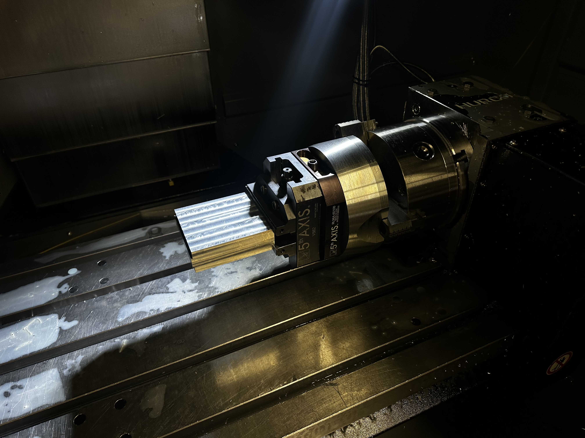
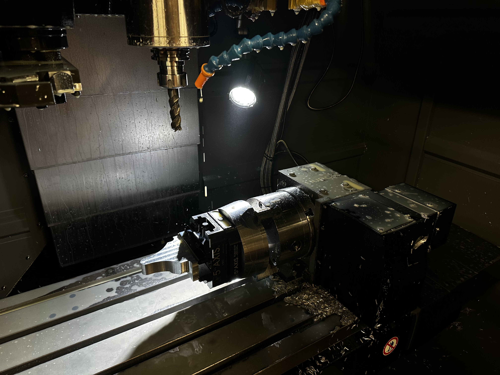
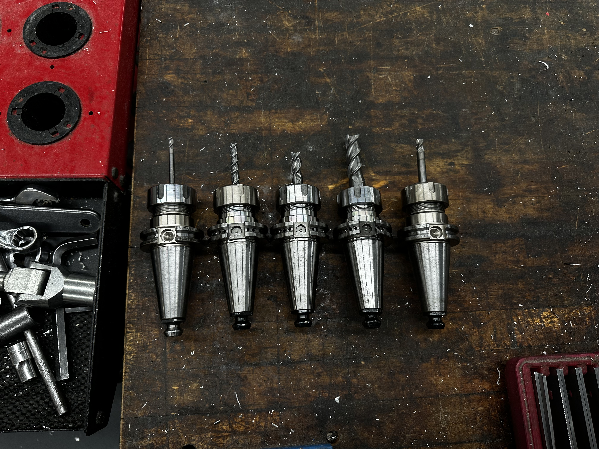

Project 01
5-Axis CNC Machining Workflow Study
A gallery documenting the setup, probing, tooling, and multi-stage machining process used to transform raw stock into a finished precision part.




